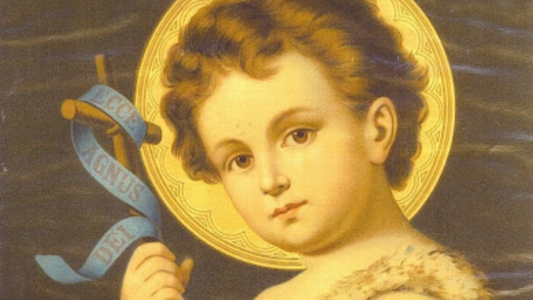
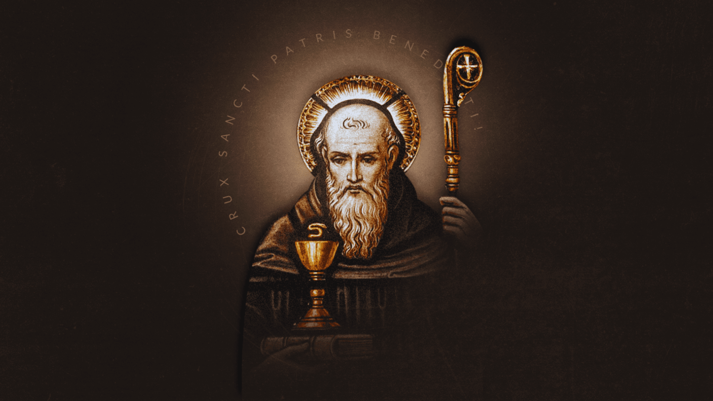
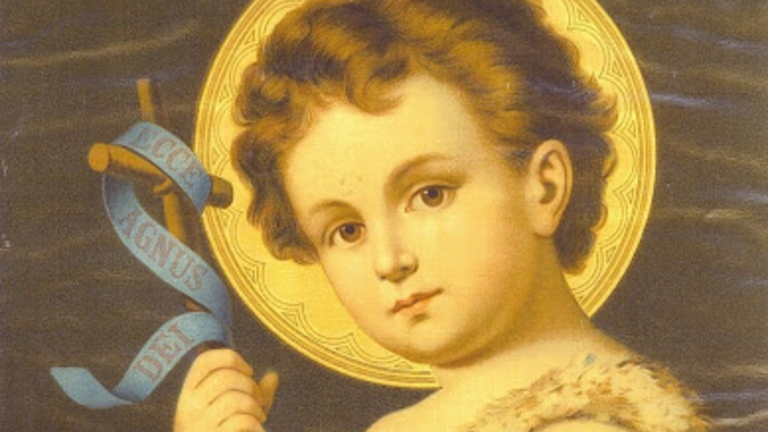
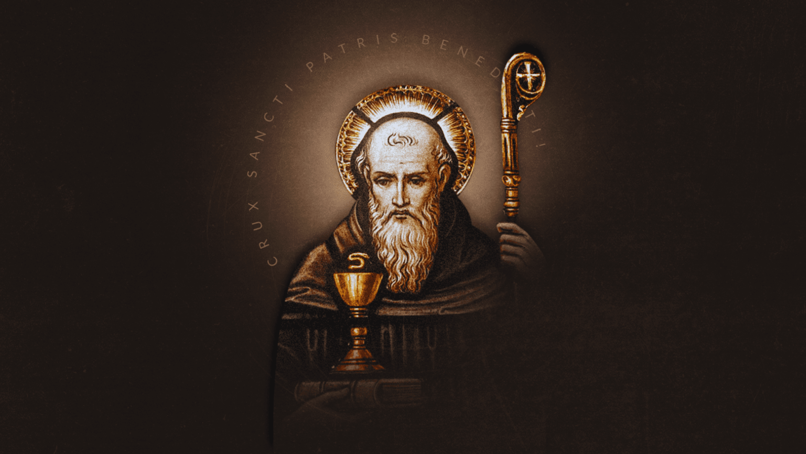

Santa Ana
-FUNÇÃO Protetora dos avós.
-DIA 26 de julho.
A avó de Jesus era estéril. Ela só concebeu Maria depois que seu marido, Joaquim, foi ao
deserto fazer penitência e pedir a Deus que lhes desse um bebê. Sua imagem a retrata de pé,
ao lado de Maria Sua imagem a retrata de pé, ao lado de Maria criança com um livro na mão.
Além de ajudar outras mulheres estéreis, é protetora das famílias, donas de casa,
professoras e costureiras.
N. SRª. DAS GRAÇAS
- FUNÇÃO Santa das bênçãos.
- Dia 27 de Novembro.
Também conhecida como Nossa Senhora da Medalha Milagrosa, a santa teria sido vista por uma noviça na
França, em 1830. A religiosa recebeu então a missão de cunhar medalhinhas, que trariam graças a quem
as usasse. Nos primeiros 50 anos, mais de 1 bilhão das jóias foram distribuídas.
São José
- FUNÇÃO Padroeiro dos trabalhadores
- DIA 19 de março
Descendente do rei Davi, José era um humilde carpinteiro que, mesmo não sendo pai biológico de
Jesus, o teria criado como se fosse seu. A devoção ao santo chegou ao Brasil com os jesuítas e se
intensificou com os imigrantes italianos, que têm o costume de produzir um doce, chamado zeppole, em
sua homenagem.
Nossa Senhora de Fátima
- DIA 13 de maio.
É uma das aparições mais famosas de Maria. Em 1917, ela apareceu a três pastorinhos em Fátima,
Portugal, a quem fez três revelações. A primeira era a imagem do inferno; a segunda previa o início
da 2a Guerra Mundial; e a terceira (revelada em maio de 2000) referia-se ao atentado sofrido pelo
papa João Paulo II (em 13 de maio de 1981) e à perseguição comunista contra o catolicismo.
São João
- FUNÇÃO Padroeiro da amizade.
-DIA 24 de junho.
João era filho de Isabel, prima de Maria, a mãe de Jesus. Como Isabel já era idosa quando
engravidou, Maria quis ajudar no parto e pediu à prima que acendesse uma fogueira quando chegasse a
hora, dando origem às fogueiras nas festas juninas. João seria precursor de Cristo, anunciando a
chegada do messias. Foi ele quem batizou Jesus no rio Jordão.
São Bento
-Dia 11 de julho.
Considerado Pai dos Monges, Bento é, de fato, uma das mais importantes figuras da
Igreja Católica. Sua fama de milagreiro se expandiu após sua morte, assim gerando sua canonização em
1220. Além disso, sua importância para o catolicismo tem força até hoje: de seus mosteiros saíram 23
papas, 5 mil bispos e 3 mil santos.
Santa Faustina
-05 de Setembro.
Santa Faustina Kowalska é conhecida por ser a grande missionária da Divina Misericórdia. Ela nasceu
dia 25 de agosto de 1905 em Glogowiec na Polônia e foi batizada pelo nome de Helena.
Ela cresceu no seio de uma família camponesa de dez filhos e sentiu aos sete anos um forte chamado
de Deus. Portanto ela fez calar esta voz, seus pais não aceitaram favoravelmente seu desejo de ser
religiosa. Aos 19 anos, durante um baile, ela teve uma visão de Jesus flagelado e coberto de sangue
que lhe fez compreender que era tempo de decidir-se por ele. Nesta mesma noite, Helena deixou sua
casa e foi para Varsóvia para responder a sua vocação. Ela foi aceita no convento das irmãs Nossa
Senhora da Misericórdia onde foi encarregada de humildes tarefas domésticas (cozinha, jardinagem,
vigia, etc.). Seu primeiro ano de vida religiosa foi marcado pela dolorosa experiência da “noite
escura” que ela ofereceu para a salvação das almas. Religiosa simples e dedicada, nada transparece a
sua vida mística. Contudo, no segredo ela recebe graças extraordinárias: ela recebia aparições de
Jesus, revelações e o dom da profecia. Ela descobre a missão que Jesus lhe confiou: escrever tudo o
que ele lhe revelará para que ela fosse a secretária de sua Misericórdia. Por meio dela, Jesus
lembra ao mundo do seu amor misericordioso.
Sob conselho de seu confessor, ela começou a escrever suas experiências místicas em um Pequeno
Diário que tornou-se em seguida muito conhecido. Jesus lhe transmitiu devoções particulares a sua
Divina Misericórdia. Em especial o terço da Divina Misericórdia, a Hora da Misericórdia, a novena à
Misericórdia e a festa da Misericórdia.